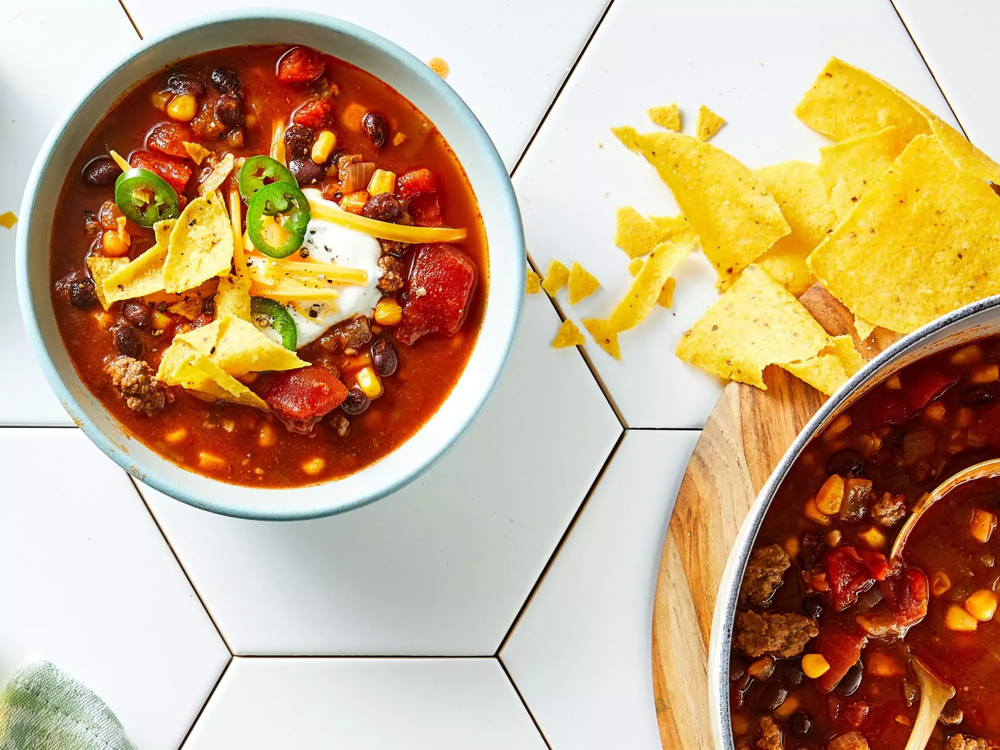

Taco Soup with Ground Beef

Description
A few pantry canned ingredients add big flavor to this weeknight taco soup. Tomato sauce adds body, but jarred salsa will do in a pinch.
Ingredients
- 1 pound 93% lean ground beef
- 1 cup chopped onion
- 4 cloves garlic, minced
- 2 (15 ounce) cans petite diced tomatoes, un-drained
- 1 (15 ounce) can whole kernel corn, well drained
- 1 (15 ounce) can black beans, rinsed and drained
- 1 (15 ounce) can tomato sauce
- 1 (14.5 ounce) can beef broth
- 1 (4 ounce) can diced green chile peppers, un-drained
- 1 tablespoon chili powder
- 1 teaspoon ground cumin
- ½ cup shredded Cheddar cheese
- ¼ cup sour cream
- coarsely crushed tortilla chips
- fresh jalapeno slices
- cracked black pepper
Steps
- Add beef, onion, and garlic to a 4- to 6-quart Dutch oven. Cook over medium heat, stirring and breaking up lumps, until meat is browned and onion is tender, 5 to 7 minutes.
- Stir in diced tomatoes, corn, beans, tomato sauce, beef broth, green chiles, chili powder, and cumin. Bring to a boil; reduce heat to low. Simmer, covered, about 20 minutes.
- Serve soup topped with Cheddar cheese, sour cream, crushed chips, jalapeño slices, and/or black pepper.